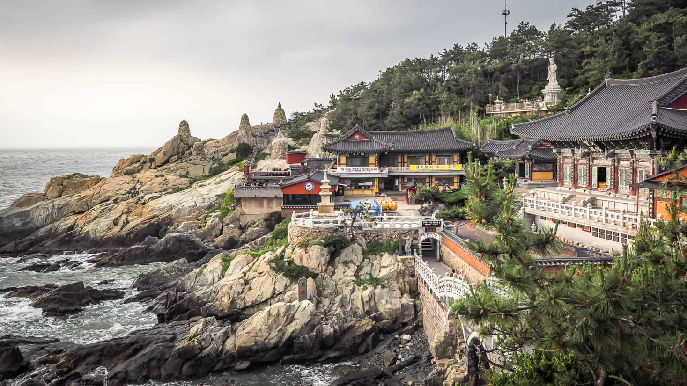
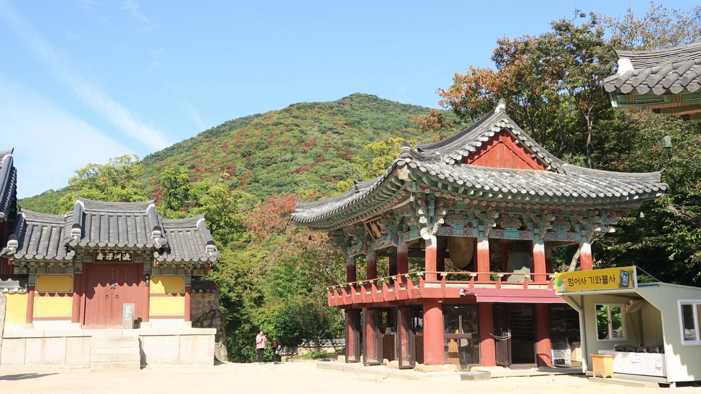
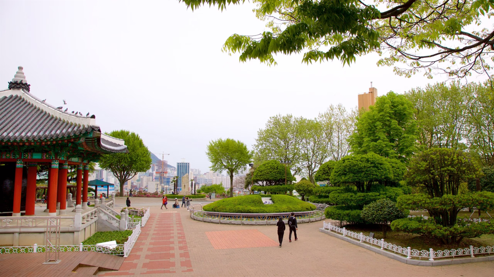

Busan, a estrela em ascensão da Coreia do Sul, oferece de tudo, desde
churrascarias de primeira linha até tradicionais barracas de comida de
rua. Aqui, exploramos a segunda cidade da Coreia do Sul e descobrimos
as suas ofertas culinárias.
Para os amantes de história:
Descubra 3 destinos imperdíveis em Busan
As atrações de Busan vão desde templos budistas centenários que
pontilham as montanhas e o litoral da cidade até praias imaculadas
com águas cristalinas. Esta cidade litorânea tem muitas coisas para
fazer o ano todo - as famílias podem passar o tempo em um aquário à
beira-mar, os compradores podem explorar bairros vibrantes e os
amantes da natureza podem desfrutar de longas caminhadas até
mirantes panorâmicos. Os santuários budistas que pontilham a costa e
as montanhas de Busan têm uma arquitetura impressionante que irá
encantar os fotógrafos.

Templo Haedong Yonggungsa
O Templo Haedong Yonggungsa é um templo budista localizado no
extremo nordeste de Busan. Construído em 1376, é um dos poucos
templos na Coreia construídos à beira-mar – você pode
desfrutar de vistas do Mar do Leste de um lado e de belas
montanhas do outro.
Bom para:
História

Praia de Haeundae
A Praia de Haeundae é uma das praias mais famosas da Coreia do
Sul, conhecida por sua areia fina e águas cristalinas. Durante
o verão, a praia fica repleta de festivais e eventos
culturais, oferecendo uma atmosfera vibrante e animada para
todos os visitantes.
Bom para:
História
Parque Yongdusan
O Parque Yongdusan, localizado no centro de Busan, abriga
alguns dos monumentos mais importantes da cidade. Você pode
ver vistas espetaculares do topo da Torre Busan, de 120 metros
de altura. O parque tem 2 museus – confira os instrumentos
musicais tradicionais no Museum of World Folk Instruments e
mais de 80 veleiros coreanos no Exhibition Hall of World Model
Boats.
Bom para:
Casais
Famílias
Orçamento

As melhores coisas para fazer em Busan mostram a reputação da cidade
como um importante porto marítimo na Ásia. Frequentemente vista como a
essência da Coreia do Sul, você experimentará uma atmosfera única em
termos de diversidade étnica e cultural, já que a cidade recebe um
público cosmopolita o ano todo.